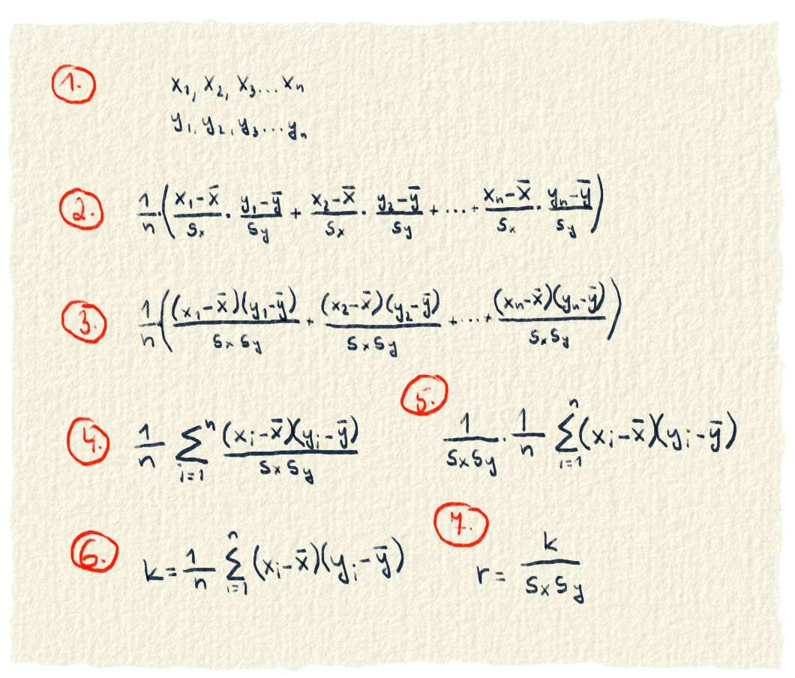

Korelácia hovorí o tom, či a ako sú dáta od seba závislé. Vďaka korelácií by sme zistili, či spolu súvisí overall hráča a jeho cena. Možno by sme našli vzťah, že čím je hráč lepší, tým bude drahší. Koreláciu medzi výškou a vekom hráča by sme asi nenašli, pretože výška hráča nezávisí od jeho veku. Zápornú koreláciu by sme možno našli medzi atribútmi gk_diving a skill_ball_control. Prvý hovorí o tom, ako dobre sa brankár hádže za loptou a druhý o tom, ako dobre hráč vedie loptu. Môžeme predpokladať, že hráči, ktorí sa dobre hádžu po lopte sú brankári a vo vedení lopty sú slabší. Hráči v poli sa zasa budú biedne hádzať za loptou, ale vedednie lopty budú mať excelentné. Či sú tieto naše hypotézy pravdivé, sa dá overiť korelačným koeficientom.
Korelačný koeficient
Za svoj život si si určite všimol, že niektoré veci spolu súvisia. Napríklad, čím viac si odkladáš na účet, tým viac tam máš našetrené. Keď ideš autom, tak čím rýchlejšie ide, tým kratší čas mu trvá, kým príde na miesto (P.S. toto nie je výzva, aby si chodil 200. Choď radšej podľa predpisov, aby si niekde nenabúral). Podobných príkladov na štýl čím viac, tým viac alebo čím viac, tým menej nájdeš v živote veľa.
My by sme sa chceli dozvedieť, či je nejaká súvislosť atribútu overall s cenou hráča. Tak si zoberieme overall a cenu všetkých 18 000 hráčov a ideme sa na to pozrieť. Dovidenia za sto rokov. Dosť bolo humoru, chceme to spraviť inteligentnejšie. Použijeme na to korelačný koeficient.
Korelačný koeficient sa ráta z kovariancie (ozn. k) a smerodajných odchýlok. Kovariancia sa ráta ako suma údajov x a y, od ktorých sú odrátané ich priemery. V našom prípade sú to overall a cena hráča.
$$ r=\frac{k}{s_{x} \cdot s_{y}} $$
Výsledkom korelačného koeficientu je nejaké číslo od -1 po 1. Výsledok určuje silu a druh závislosti. Keď je od -1 po 0, znamená, že údaje rastú každý opačne. Teda keď je x menšie, y je väčšie. Čím je číslo bližšie k -1, tým je závisloť silnejšia. Výsledok 0 znamená, že medzi údajmi nie je žiaden vzťah. Čísla okolo 0 hovoria o veľmi slabej závislosti. Keď ideme na opačnú stranu k 1, tak údaje rastú rovnako. Čím je x väčšie, tým je aj y väčšie. Zasa platí, že čím bližšie je výsledok k 1, tým je závislosť silnejšia.
Teraz si ideme ukázať, ako takýto zázrak môže fungovať.
Niektoré veci medzi sebou súvisia viac, niektoré menej a niektoré vôbec. Táto súvislosť sa dá vyjadriť matematikou.
Začneme tým, že máme údaje o troch futbalistoch v tabuľke. Chceme vedieť ako súvisí overall s cenou hráča a gk_diving so skill_ball_control. Keď sa pozrieme na tie údaje, tak je vidno, že čím je väčší overall, tým je väčšia cena. S gk_diving a skill_ball_control je to tak, že čím je jedno menšie, tým je druhé väčšie. Závislosť tam teda máme.
Meno
Overall
Cena
Gk_diving
Skill_ball_control
Jonathan Mitchell
64
500 000
63
40
Anthony Lopes
85
33 500 000
87
21
Lionel Messi
94
95 500 000
0
96
Závislosť sme zatiaľ merali dvomi slovami: menšie a väčšie. Teraz ich potrebujeme nejak vyjadriť matematikou. Chceme vedieť, či je údaj malý alebo veľký. Keď máme len údaj, nevieme o ňom povedať aký je. Ale keď ho s niečím porovnáme, tak už vieme povedať, či je oproti tomu veľký alebo malý. Údaj môžeme porovnať voči ostatným údajom. Nechceme ho však porovnávať s každým z údajov, lebo z takého porovnania by sme nič nemali. Potrebujeme nejakú vhodnú reprezentáciu týchto údajov a ako už tušíš, je to priemer.
Priemery pre naše štyri atribúty sú takéto: overall=81, cena=43 166 666,67 gk_diving=50 a skill_ball_control=52,33.
Či je údaj väčší alebo menší ako priemer, zistíme ľahko. Od údaja odčítame priemer a keď bude údaj väčší, výsledok bude kladný. Keď bude údaj menší, výsledok bude záporný. V tabuľke si ukážeme rozdiely medzi údajom a priemerom.
Meno
Overall
Cena
Gk_diving
Skill_ball_control
Jonathan Mitchell
-17
-42 666 666,67
13
-12
Anthony Lopes
4
-9 666 666,67
37
-31
Lionel Messi
13
52 333 333,33
-50
43,67
Keby náhodou, čísla v tabuľke sme dostali ako údaj-priemer. Pre Mitchellov overall to vyzeralo 64-81=-17. Pre ostatné údaje podobne. Rozdiely, ktoré máme v tabuľke už hovoria o tom, či je údaj veľký alebo malý. Dokonca hovoria o tom, ako veľmi je veľký alebo malý. Čím je ďalej od priemeru tým je väčší (alebo na druhú stranu od priemeru je menší). Všimni si, že aj pri rozdieloch platí ten istý vzťah ako pri údajoch v prvej tabuľke. Čím je overall vyšší, tým je aj cena vyššia. Čím je vyšší gk_diving, tím je menšia skill_ball_control. Zatiaľ sme na tom dobre. Vzťahy medzi údajmi stále platia a navyše sme dostali čísla, o ktorých vieme povedať, či sú oproti ostatným veľké alebo malé.
Stále však nevieme v matematickom jazyku povedať, či údaje rastú rovnakým smerom (jedno väčšie, druhé väčšie) alebo opačným (jedno menšie, druhé väčšie). S týmto nám pomôže násobenie. Rozdiely, medzi ktorými chceme zistiť vzťah, vynásobíme medzi sebou.
Tu je pekné sledovať, ako matematika zafunguje.
Keď platí, že overall aj cena rastú rovnako (jeden malý, druhý malý), tak matematika zafunguje tak, že rozdiely buď budú oba záporné (lebo overall aj cena sú malé) alebo budú oba kladné (lebo overall aj cena sú veľké). Vždy keď ich spolu vynásobíš, dostaneš kladné číslo.
Matematika zafunguje aj vtedy, keď údaje budú rásť opačným smerom, ako je gk_diving a skill_ball_control. Čím lepší gk_diving, tým horší skill_ball_control a čím horší gk_diving, tým lepší skill_ball_control. Keď bude jeden z nich menší ako priemer a druhý väčší, tak prvý rozdiel bude záporné číslo a druhý kladné. Mínus krát plus je mínus. Výsledok bude záporný.
Zase sme na tom o kúsok lepšie. Už vieme povedať aj vzťah medzi dvomi údajmi, resp. ich rozdielmi. Keď je súčin rozdielov kladný, sú oba údaje väčšie ako priemer. Keď je súčin záporný, jeden údaj je menší ako priemer a druhý väčší.
Meno
Overall * Cena
Gk_diving * Skill_ball_control
Jonathan Mitchell
725 333 333,33
-160,33
Anthony Lopes
-38 666 666,67
-1 1159,33
Lionel Messi
680 333 333,33
-2 183,33
V tabuľke máme vypočítané súčiny. Ešte stále však nevieme povedať, aký je vzťah medzi údajmi. Ak by sme súčiny počítali nie pre troch, ale pre 18 000 futbalistov, tak by sa nám vzťah hľadal ťažko. Potrebujeme niečo jednoduchšie, nejaké jedno číslo. Nie je nič jednoduchšie. Spravíme si zo súčinov priemer. Priemer pre súčin overallu a ceny je 455 666 666,67. Priemer pre súčin gk_diving a skill_ball_control je -1 167,67.
Super, máme jedno číslo a mohli by sme porovnať závislosť. Pri overalle a cene teda platí, že rastú rovnakým smerom. Gk_diving a skill_ball_control rastú každé opačným smerom. Medzi overallom a cenou vyšla závislosť v miliónoch a medzi gk_diving a skill_ball_control iba v tisícoch. Platí, že overall a cena majú medzi sebou oveľa väčšiu závislosť ako gk_diving a skill_ball_control? No nie, neplatí. Zase treba prihliadnuť na veľkosť dát.
Ako porovnať nerovnaké dáta sme mali už vo variančnom koeficiente. Riešením bolo spraviť porovnávané údaje relatívne (rozptyl sme vyjadrili na jednu jednotku údajov, pamätáš?). Niečo podobné chceme teda aj tu. To, čo sme teraz porovnali je priemer z rozdielov. Spravíme teda rozdiely relatívne. To znamená, že ich vyjadríme na jednu jednotku. Zatiaľ ešte nevieme na akú.
Keď porozmýšlaš nad rozdielom, zistíš, že je to vlastne nejaká variabilita. Lebo keď odčítaš priemer od údaju, dostaneš, ako ďaleko sú od seba. Takže rozdiel je variabilita a tú treba vyjadriť na jednotku variability. Veľkosť variability sme už počítali viacerými spôsobmi. Vyberieme si z nich smerodajnú odchýlku.
Poznáme variabilitu pre jeden údaj a aj pre všetky údaje (je to smerodajná odchýlka). Už stačí len spraviť rozdiel deleno smerodajná odchýlka a máme rozdiel relatívny. Tak to vyskúšame.
Vypočítame si smerodajné odchýlky pre overall=12.57, cena=39 381 326.57, gk_diving=36.69 a skill_ball_control=31.84.
Skúsime vypočítať vzťah medzi dátami znovu. Pre každý údaj vypočítame rozdiel medzi ním a priemerom. Tu prichádza zásadný krok. Každý rozdiel vydelíme jeho smerodajnou odchýlkou (rozdiely overallu sa delia smerodajnou odchýlkou overallu, rozdiely ceny sa delia smerodajnou odchýlkou ceny a podobne). Takto upravené rozdiely môžeme medzi sebou vynásobiť. Nakoniec z nich spravíme priemer a dostaneme závisloť medzi údajmi.
V tejto tabuľke sú rozdiely vydelené príslušnou smerodajnou odchýlkou. Pre overall Jonathana Mitchella je to -17/12=-1,417 a pre ostatné sa to ráta rovnako. Ani delenie nepokazilo vzťahy medzi údajmi. Stále platí, že čím väčší overal, tým väčšia cena a čím väčší gk_diving, tým menší skill_ball_control.
Meno
Overall
Cena
Gk_diving
Skill_ball_control
Jonathan Mitchell
-1,352
-1,083
0,354
-0,387
Anthony Lopes
0,318
-0,245
1,009
-0,984
Lionel Messi
1,034
1,329
-1,363
1,372
Tu si vynásobíme rozdiely, medzi ktorými chceme hľadať vzťahy.
Meno
Overall * Cena
Gk_diving * Skill_ball_control
Jonathan Mitchell
1,465
-0,137
Anthony Lopes
-0,078
-0,993
Lionel Messi
1,374
-1,869
No a nakoniec súčiny spriemerujeme. Pre Overall * Cena je priemer 0,921. Pre Gk_diving * Skill_ball_control je priemer -0,999. Konečne máme správny výsledok, ktorý môžeme porovnať. Vidíme, že overall a cena rastú rovnakým smerom. Gk_diving a kill_ball_control rastú opačným smerom a medzi nimi je vzťah silnejší ako medzi overllom a cenou.
Keď predchádzajúce výpočty upravíme, dostaneme kovarianciu a korelačný koeficient

Obr. 1.: Naše výpočty sme upravili a dostali sme koreláciu a korelačný koeficient.
Máme dva dátové súbory. Sú to x a y. Môžeš si za tým predstaviť náš overall a cenu.
Z x aj y sa vypočítal priemer a smerodajná odchýlka. Od každého údaju sa priemer odráta. Tento rozdiel sa predelí smerodajnou odchýlkou. Príslušné rozdiely sa vynásobia (u nás to bol overall a cena hráča). Nakoniec sa z toho spraví priemer.
Aby sme nemuseli každé x a y deliť zvlášť, upravíme si zápis. Zlomky, ktoré sa spolu násobia dáme do jedného.
Ďalšia úprava. Sčítanie zlomkov nahradíme sumou. Písmeno i bude postupne prechádzať všetkými údajmi x a y.
Delenie smerodajnými odchýlkami dáme von pred sumu. Matematika nám to dovolí, pretože smerodajné odchýlky sú počas celého sčítavania rovnaké a je jedno, či sa najprv delí a potom sčítavá alebo sa najprv sčíta a potom sa to celé vydelí.
Delenie smerodajnými odchýlkami presunieme do ďalšieho kroku. Vznikol vzorec, ktorý už poznáš. Je to kovariancia.
Kovarianciu predelíme smerodajnými odchýlkami a dostaneme výraz, ktorý sa nazýva korelačný koeficient.
Celé to, čo sme tu písali viedlo k tomu, aby sme dostali dva výrazy. Prvý sa nazýva kovariancia.
$$ k=\frac{1}{n}\sum_{i=1}^n \left(x_{i} - \overline{x} \right) \cdot \left(y_{i} - \overline{y} \right) $$
Kovariancia je priemer z vynásobených rozdielov. Hovorí už o tom, ako sú dáta závislé, ale ešte nevieme povedať, či veľa alebo málo. To budeme vedieť až keď kovarianciu spravíme relatívnu. Vztiahneme ju na smerodajné odchýlky. Tento výraz sa nazýva korelačný koeficient.
$$ r=\frac{k}{s_{x} \cdot s_{y}} $$
Korelačný koeficient hovorí o tom, ako spolu dáta súvisia. Môže byť kladný, záporný alebo nula. Čím väčšie číslo, tým je vzťah medzi dátami silnejší. Keď medzi údajmi nie je žiadna závislosť, tak údaje vyzerajú tak, že niektoré sú oba rovnako malé alebo veľké, ďalšie sú zas také, že je jeden menší, druhý väčší. Čiže niekedy súčin medzi rozdielny vyjde kladné číslo, inokedy záporné. Keď to spolu sčítaš, tak sa to vynuluje. Nie celkom, ale je to číslo blízke nule.
Aby sme sa uistili, že sme s tromi futbalistami počítali dobre, vypočítame si korelačný koeficient medzi overallom a cenou aj vzorcom.
Potrebujeme na to priemery a smerodajné odchýlky. Priemery sú pre overall=81, cena=43 166 666,67 a smerodajné odchýlky sú pre overall=12.57, cena=39 381 326.65.
$$ r=\frac{k}{s_{overall} \cdot s_{cena}} = \frac{913 444 444, 437}{12.57 \cdot 39 381 326.65} = \frac{455 666 666,67}{495 023 274,9849} = 0,921 $$
Už vieme ako korelačný koeficient prišiel na svet, vieme čo znamená a vieme ho aj vyrátať. Ukážeme si teda, ako vyzerá v praxi. Spravíme si graf, ktorý bude hovoriť o tom, aká je korelácia medzi niektorými atribútmi hráčov Interu Milano. Červené políčko znamená, že korelácia je silná a oba atribúty rastú rovnakým smerom. Korelácia je silná aj keď je políčko tmavomodré, ale tu atribúty rastú opačným smerom. Bledo zelená farba hovorí, že medzi atribútmi vzťah nie je.
Obr. 2.: Korelácia hráčov Interu Milano
Ešte v úvode sme chceli zistiť vzťahy medzi overralom a cenou, medzi výškou a vekom, medzi gk_diving a skill_ball_control. Pozri sa na graf a skús na to prísť sám. Nachvíľu prestaň čítať a pozri sa na ten graf, lebo text pokračuje riešením. Medzi overallom a cenou je korelácia a rastú tým istým smerom. Vek a výška medzi sebou vzťah nemajú. Medzi gk_diving a skill_ball_control je záporná korelácia, to znamená, že rastie každé iným smerom. Porozmýšľaj aj nad vzťahmi, ktoré majú medzi sebou iné atribúty. Skús podumať aj nad tým, prečo políčka na diagonále majú korelačný koeficient 1.